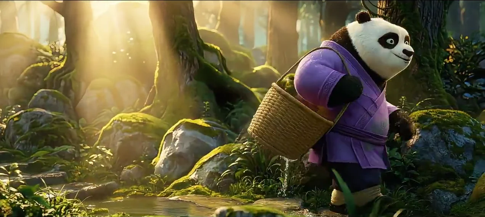
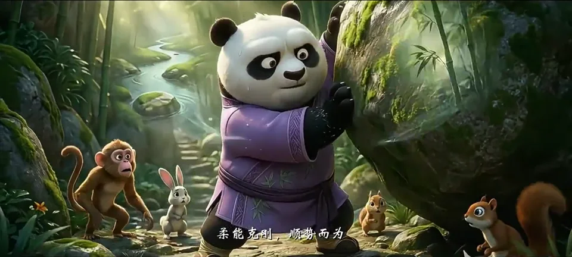

AIGC 动画 · 米兰设计周三等奖
天下峨眉
团队短片 · 3:00 · 成片剪辑与调色
我的分工
我负责成片的剪辑与调色。手头素材接不上原分镜时，我重新梳理镜头顺序，重组叙事，并重新生成缺失的素材，再完成成片剪辑与调色。
- 获奖
- 米兰设计周三等奖
- 团队
- 4 人
- 制作时间
- 2025.12 至 2026.05
- 片长
- 3 分钟
成片画面


AIGC 动画 · 米兰设计周三等奖
团队短片 · 3:00 · 成片剪辑与调色
我负责成片的剪辑与调色。手头素材接不上原分镜时，我重新梳理镜头顺序，重组叙事，并重新生成缺失的素材，再完成成片剪辑与调色。

